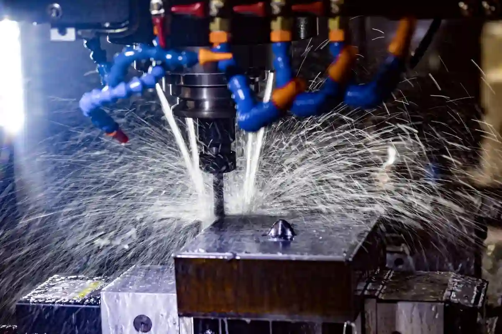
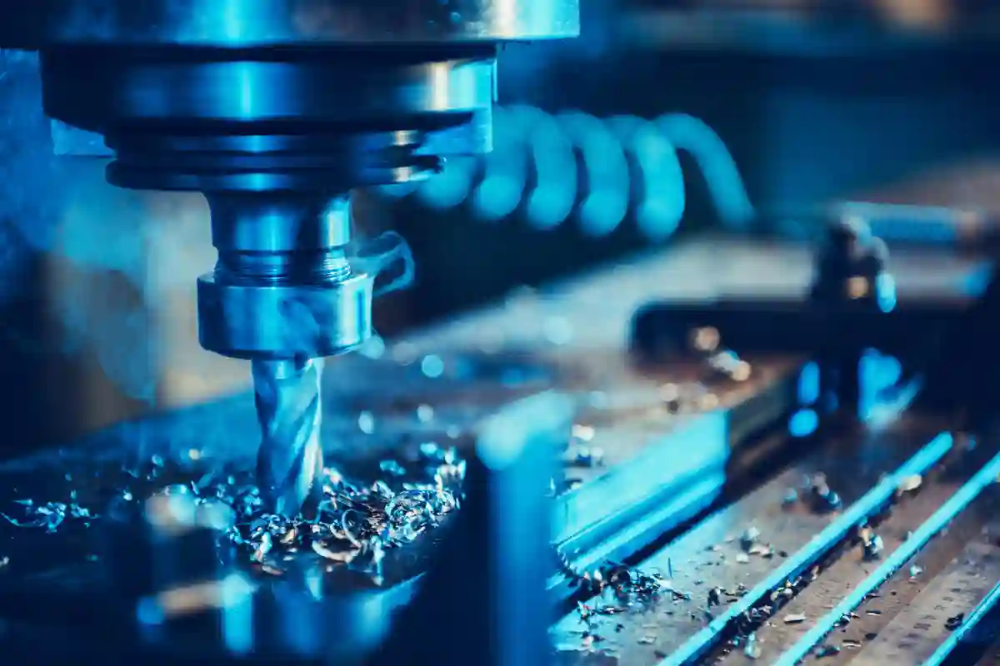

Özel CNC Parça Üretimi Nedir? Yöntemler ve Uygulama Alanları
Özel CNC parça üretimi, standart seri üretim kalıplarının dışında kalan; ölçü, tolerans, malzeme ve geometrik yapı açısından projeye özgü olarak tasarlanan parçaların bilgisayarlı sayısal kontrollü (CNC) tezgâhlar ile üretilmesini ifade eder. Bu üretim yaklaşımı, yalnızca bir parçanın imalatını değil; aynı zamanda mühendislik kararlarını, proses planlamasını ve kalite kontrol disiplinini kapsayan bütüncül bir süreci temsil eder.
Endüstride birçok uygulama, katalog ürünleri veya standart ölçülerle karşılanamaz. Özellikle makine revizyonları, Ar-Ge projeleri, prototip çalışmalar ve düşük adetli fakat yüksek hassasiyet gerektiren işler, özel cnc parça üretimi yaklaşımını zorunlu kılar. Bu noktada üretim süreci yalnızca “parçayı yapmak” değil, parçanın neden o yöntemle üretildiğini de açıklayabilmelidir.
Bu üretim modelinde en kritik unsur, parça geometrisinin doğru analiz edilmesi ve buna uygun CNC işleme yönteminin seçilmesidir. Tornalama mı, frezeleme mi yoksa çok eksenli bir çözüm mü gerektiği; malzeme türü, tolerans aralığı ve yüzey kalitesi beklentisi ile doğrudan ilişkilidir. Özellikle hassas cnc imalat gerektiren projelerde, mikron seviyesinde sapmalar bile fonksiyon kaybına yol açabilir.
Özel üretim yaklaşımı, seri imalata kıyasla daha esnek fakat aynı zamanda daha fazla teknik bilgi gerektirir. Bu nedenle sürecin her aşaması, tasarımdan ölçüme kadar kontrollü ilerlemelidir. Aksi durumda, parça üretilebilir olsa dahi kullanım amacını karşılamayabilir.
Özel CNC Parça Üretimi Hangi İhtiyaçlardan Doğar?

Özel üretim ihtiyacı, çoğu zaman mevcut çözümlerin yetersiz kaldığı noktalarda ortaya çıkar. Standart bir parçanın küçük bir revizyonu bile, üretim yönteminin tamamen değişmesine neden olabilir. Bu durum özellikle özel tolerans gerektiren mekanik sistemlerde sıkça görülür.
Standart Parçaların Yetersiz Kaldığı Durumlar
Makine ekipmanlarında kullanılan birçok parça, teorik olarak standarttır; ancak pratikte çalışma koşulları bu standartların dışına çıkar. Yük, sıcaklık, titreşim veya montaj toleransları değiştiğinde, standart parçalar işlevini kaybedebilir. Bu noktada özel toleranslı cnc parçalar devreye girer.
Örneğin rulman yuvası, mil bağlantısı veya bağlantı flanşı gibi kritik bileşenlerde mikron seviyesinde hassasiyet gerekir. Standart ürünler bu toleransı karşılamadığında, özel üretim kaçınılmaz olur. Bu tür uygulamalarda genellikle cnc tornalama özel parça çözümleri tercih edilir.
Prototip ve Ar-Ge Süreçlerinde Özel Üretim Gereksinimi
Ar-Ge projelerinde amaç, seri üretimden önce tasarımın doğrulanmasıdır. Bu aşamada kalıp yatırımı yapmak hem maliyetli hem de risklidir. CNC tabanlı özel üretim, bu noktada büyük avantaj sağlar.
Prototip parçalar, çoğu zaman karmaşık geometrilere sahiptir ve birden fazla revizyon gerektirir. Bu nedenle karmaşık parça cnc üretimi süreçlerinde esnek işleme stratejileri uygulanır. Çok eksenli frezeleme, modüler bağlama sistemleri ve CAM destekli optimizasyonlar bu sürecin ayrılmaz parçalarıdır.
Özel CNC Parça Üretiminde Temel Karar Kriterleri
Her özel parça için üretim yöntemi seçimi, belirli teknik parametrelere dayanır. Bu parametreler göz ardı edildiğinde, maliyet artışı ve kalite problemleri kaçınılmaz hale gelir.
Parça Geometrisi ve İşleme Yönü
Parçanın silindirik mi prizmatik mi olduğu, üretim yöntemini doğrudan belirler. Döner simetrili parçalar için tornalama ön plandayken, çok yüzeyli ve cepli parçalar için cnc frezeleme özel üretim yaklaşımı tercih edilir. Geometri karmaşıklığı arttıkça, bağlama sayısı ve operasyon adedi de artar. Bu durum, tolerans zincirini doğrudan etkiler. Bu nedenle proses planlaması, parça tasarımıyla eş zamanlı yürütülmelidir.
Tolerans ve Yüzey Kalitesi Beklentisi
Özel üretimde tolerans, yalnızca ölçü hassasiyeti değil; aynı zamanda fonksiyonel uyum anlamına gelir. Özellikle yataklama yüzeyleri, sızdırmazlık bölgeleri ve hareketli parçalar için yüzey pürüzlülüğü kritik bir faktördür. Bu tür uygulamalarda hassas cnc imalat süreçleri devreye girer. Kesici takım seçimi, ilerleme hızları ve son paso stratejileri, yüzey kalitesini belirleyen ana unsurlardır.
CNC Tornalama ile Özel Parça Üretimi Ne Zaman Tercih Edilir?

CNC tornalama, döner simetriye sahip parçaların yüksek hassasiyetle işlenmesini sağlayan temel üretim yöntemlerinden biridir. Özellikle mil, burç, pim, flanş ve benzeri silindirik geometriler söz konusu olduğunda cnc tornalama özel parça çözümleri hem ekonomik hem de teknik açıdan avantaj sağlar.
Özel CNC parça üretimi projelerinde tornalama yönteminin tercih edilmesi, yalnızca parçanın şekliyle sınırlı değildir. Aynı zamanda tolerans gereksinimleri, seri adedi ve yüzey kalitesi beklentisi de bu kararı doğrudan etkiler. Tornalama işlemi, tek bağlamada çoklu operasyon yapılmasına olanak tanıdığı için ölçüsel tutarlılık açısından önemli bir avantaj sunar.
CNC Tornalamaya Uygun Parça Tipleri
CNC tornalama; eksenel simetriye sahip, iç ve dış çap toleranslarının kritik olduğu parçalarda maksimum verim sağlar. Özellikle rulman yatakları, hidrolik bağlantı elemanları ve hassas mil sistemlerinde özel toleranslı cnc parçalar üretimi için vazgeçilmezdir.
Bu tür parçalarda genellikle mikron seviyesinde toleranslar talep edilir. Bu nedenle kesici takım geometrisi, ilerleme hızı ve paso derinliği, parça fonksiyonuna göre optimize edilir. Hassas cnc imalat gerektiren tornalama operasyonlarında ölçüm süreci, üretimin ayrılmaz bir parçasıdır. Bu noktada ilgili detaylı yöntem açıklamaları için CNC Tornalama sayfası, üretim yaklaşımının teknik altyapısını daha net şekilde ortaya koyar.
Tornalama Sürecinde Hassasiyet ve Tekrarlanabilirlik
Özel üretim projelerinde en sık karşılaşılan sorunlardan biri, parçalar arası ölçüsel sapmalardır. CNC tornalama, programlanabilir yapısı sayesinde bu sapmaları minimize eder. Aynı programın defalarca çalıştırılması, özellikle düşük ve orta adetli işlerde ciddi zaman kazancı sağlar.
Ancak burada kritik nokta, ilk parça doğrulamasıdır. İlk parça onaylanmadan seri devam ettirilmemelidir. Bu yaklaşım, özel cnc parça üretimi süreçlerinde kalite sürekliliğini garanti altına alır.
CNC Frezeleme ve Dik İşleme ile Özel Üretim Yaklaşımı
CNC frezeleme, prizmatik ve çok yüzeyli parçaların işlenmesinde kullanılan en esnek üretim yöntemlerinden biridir. Cep açma, kanal işleme, yüzey frezeleme ve karmaşık kontur işlemleri bu yöntemle gerçekleştirilir. Özellikle cnc frezeleme özel üretim projelerinde, parça geometrisinin sınırları büyük ölçüde ortadan kalkar.
Frezeleme yönteminin en büyük avantajı, üç eksenin ötesine geçebilmesidir. Günümüzde 4 ve 5 eksenli dik işleme merkezleri, tek bağlamada çok yüzeyli işlem yapma imkânı sunar. Bu durum, karmaşık parça cnc üretimi için ciddi bir verimlilik artışı anlamına gelir.
Frezeleme ile Üretilen Özel Parça Türleri
Makine gövdeleri, kalıp plakaları, bağlantı elemanları ve özel aparat parçaları, frezeleme yönteminin en yaygın kullanım alanlarıdır. Bu parçalar genellikle çok sayıda ölçü ve yüzey içerdiği için tornalama ile üretilemez.
Bu tür projelerde özel cnc parça üretimi, yalnızca CAM programlamayla sınırlı kalmaz. Bağlama aparatlarının tasarımı, işleme sırası ve takım yollarının optimizasyonu da sürecin kritik parçalarıdır. Bu bağlamda, üretim altyapısının detaylarını görmek için CNC Frezeleme ve Dik İşleme içeriği doğrudan referans alınabilir.
Yüzey Kalitesi ve Geometrik Doğruluk
Frezeleme işlemlerinde yüzey kalitesi, genellikle son paso stratejileri ile kontrol edilir. Parçanın fonksiyonuna bağlı olarak Ra değerleri belirlenir ve takım seçimi buna göre yapılır. Özellikle sızdırmazlık yüzeyleri ve montaj yüzeylerinde hassas cnc imalat yaklaşımı kaçınılmazdır.
Burada önemli bir teknik detay da titreşim kontrolüdür. Uzun takım boyları veya ince cidarlı parçalar, titreşime açık yapılardır. Bu nedenle kesme parametreleri, yalnızca teorik değil pratik deneyime dayalı olarak belirlenmelidir.
CNC Tornalama mı, CNC Frezeleme mi? Karar Nasıl Verilir?
Özel üretim projelerinde en sık sorulan sorulardan biri, hangi yöntemin tercih edilmesi gerektiğidir. Bu karar, tek bir kritere bakılarak verilmez. Parça geometrisi, tolerans aralığı, malzeme türü ve üretim adedi birlikte değerlendirilmelidir.
Genel bir kural olarak;
- Döner simetrili ve eksenel toleransı kritik parçalar için cnc tornalama özel parça,
- Prizmatik, çok yüzeyli ve cep geometrisi içeren parçalar için cnc frezeleme özel üretim tercih edilir.
Ancak birçok projede bu iki yöntem birlikte kullanılır. Örneğin önce tornalanan bir parça, daha sonra frezeleme operasyonuna alınabilir. Bu hibrit yaklaşım, özel cnc parça üretimi süreçlerinde oldukça yaygındır. Bu tür üretim stratejilerinin sanayi genelindeki standartlarını görmek için, TSE – Türk Standartları Enstitüsü tarafından yayımlanan teknik dokümanlar referans alınabilir.
Karmaşık Parça CNC Üretimi Neden Özel Yaklaşım Gerektirir?
Endüstriyel uygulamalarda her parça basit geometrilerden oluşmaz. Çok yüzeyli, farklı eksenlerde işleme gerektiren ve birden fazla fonksiyonel bölge içeren parçalar, karmaşık parça cnc üretimi kapsamına girer. Bu tür parçalar, standart üretim kalıplarının ötesinde mühendislik bilgisi ve tecrübe gerektirir.
Özel cnc parça üretimi, karmaşık geometriler söz konusu olduğunda yalnızca tezgâh kapasitesiyle değil; proses planlaması, bağlama stratejisi ve ölçüm altyapısıyla birlikte değerlendirilmelidir. Aksi durumda parça teorik olarak üretilebilir olsa bile fonksiyonel olarak beklentiyi karşılamaz.
Çok Eksenli CNC Tezgâhların Rolü
3 eksenli makineler, belirli bir noktaya kadar yeterli olsa da karmaşık geometrilerde bağlama sayısı arttıkça hata riski yükselir. Bu noktada 4 ve 5 eksenli CNC tezgâhlar devreye girer. Tek bağlamada çok yüzeyli işlem yapılabilmesi, ölçüsel zinciri ciddi ölçüde kısaltır.
Bu yaklaşım özellikle hassas cnc imalat gerektiren parçalarda büyük avantaj sağlar. Parçanın farklı yüzeyleri arasında konum hatası oluşmadan üretim tamamlanabilir. Ayrıca işlem süreleri kısalır ve tekrarlanabilirlik artar. Çok eksenli işleme stratejilerinin temel prensipleri, CNC İşleme Yöntemleri Nelerdir? içeriğinde detaylı şekilde açıklanmaktadır.
Bağlama Stratejileri ve Operasyon Sıralaması
Karmaşık parça üretiminde yapılan en büyük hatalardan biri, bağlama tasarımının yeterince planlanmamasıdır. Parçanın her bağlamada referansını kaybetmesi, toleransların zincirleme bozulmasına neden olur.
Bu nedenle özel cnc parça üretimi projelerinde bağlama aparatları çoğu zaman parçaya özel olarak tasarlanır. Operasyon sırası, en kritik yüzeylerin ilk bağlamada işlenmesi prensibine göre belirlenir. Bu yaklaşım, özellikle özel toleranslı cnc parçalar için hayati öneme sahiptir.
Özel Toleranslı CNC Parçalar Nasıl Yönetilmelidir?
Tolerans, yalnızca ölçüsel bir değer değildir; parçanın sistem içindeki görevini doğrudan etkileyen fonksiyonel bir parametredir. Bu nedenle özel toleranslı cnc parçalar, standart üretim yaklaşımıyla ele alınamaz. Özel cnc parça üretimi sürecinde toleranslar, tasarım aşamasında doğru şekilde tanımlanmalı ve üretim boyunca sürekli kontrol edilmelidir. Gereksiz dar toleranslar maliyeti artırırken, geniş toleranslar fonksiyon kaybına yol açabilir.
Tolerans Analizi ve Fonksiyonel Yaklaşım
Her ölçü, aynı hassasiyeti gerektirmez. Fonksiyonel yüzeyler ile estetik veya taşıyıcı olmayan yüzeyler birbirinden ayrılmalıdır. Bu ayrım yapılmadığında, üretim süreci gereksiz yere zorlaşır.
Özellikle yataklama, sızdırmazlık ve hareketli temas bölgelerinde hassas cnc imalat yaklaşımı zorunludur. Bu bölgelerde yüzey pürüzlülüğü ve geometrik doğruluk, tolerans kadar önemlidir. Türkiye’de tolerans ve geometrik ölçülendirme standartlarına ilişkin teknik çerçeve için, Makina Mühendisleri Odası (MMO) tarafından yayımlanan kaynaklar referans alınabilir.
Ölçüm, Kontrol ve Doğrulama Süreçleri
Özel üretimde kalite, yalnızca son kontrolde sağlanmaz. Proses içi ölçüm ve ara kontroller, hatanın erken aşamada tespit edilmesini sağlar. Bu yaklaşım, hem zaman kaybını hem de hurda oranını düşürür.
CMM (Koordinat Ölçüm Makineleri), optik ölçüm sistemleri ve hassas mastarlar, özel cnc parça üretimi süreçlerinde yaygın olarak kullanılır. Ölçüm sonuçları kayıt altına alınarak izlenebilirlik sağlanır. Bu noktada ölçüm ve kalite disiplininin üretimle nasıl entegre edildiğini görmek için Özel Talaşlı İmalat sayfası, sürecin bütünsel yapısını ortaya koyar.
Malzeme Seçiminin Özel CNC Üretime Etkisi
Parça tasarımı kadar malzeme seçimi de üretim yöntemini doğrudan etkiler. Alüminyum, çelik, paslanmaz, bronz veya mühendislik plastikleri; her biri farklı kesme parametreleri ve takım stratejileri gerektirir. Özel cnc parça üretimi, malzeme–takım–parametre uyumunun doğru kurulmasını zorunlu kılar. Yanlış malzeme seçimi, işleme süresini uzatır ve yüzey kalitesini düşürür.
Sertlik, İşlenebilirlik ve Takım Aşınması
Sertliği yüksek malzemelerde takım aşınması daha hızlı gerçekleşir. Bu durum, tolerans sapmalarına ve yüzey bozulmalarına yol açabilir. Bu nedenle özellikle hassas cnc imalat gerektiren parçalarda takım ömrü yakından takip edilmelidir. Malzeme analizinin üretim kararlarına etkisi, genellikle tecrübe ile şekillenir. Bu da özel üretim yapan firmaların neden fark yarattığını açıklar.
Prototip Parça Üretiminde Özel CNC Yaklaşımı Neden Kritik?
Prototip üretimi, bir tasarımın kağıt üzerindeki doğruluğunu değil; gerçek çalışma koşullarındaki performansını test etmeyi amaçlar. Bu aşamada yapılan üretim, çoğu zaman tek seferlik veya çok düşük adetlidir. Bu nedenle kalıp yatırımı gibi yüksek maliyetli çözümler yerine özel cnc parça üretimi tercih edilir.
Prototip aşamasında üretim yöntemi seçimi, yalnızca parçayı elde etmeye değil; aynı zamanda gelecekteki seri üretim stratejisine de zemin hazırlar. Yanlış yöntemle üretilen bir prototip, seri üretimde beklenmeyen problemleri gizleyebilir. Bu nedenle hassas cnc imalat prensipleri, prototip sürecinde de aynen uygulanmalıdır.
Prototip Sürecinde Tornalama ve Frezeleme Kombinasyonu
Birçok prototip parça, tek bir CNC yöntemiyle üretilemez. Örneğin silindirik bir gövde tornalama ile işlenirken, bağlantı yüzeyleri veya kanallar frezeleme gerektirebilir. Bu hibrit yaklaşım, cnc tornalama özel parça ve cnc frezeleme özel üretim süreçlerinin birlikte planlanmasını zorunlu kılar.
Bu tür kombinasyonlar, ölçüsel tutarlılığı korumak için operasyon sırasının doğru belirlenmesini gerektirir. Prototip aşamasında bu planlama doğru yapılırsa, seri üretime geçiş süreci çok daha sorunsuz ilerler.
Düşük ve Orta Adetli Özel CNC Üretimde Maliyet Nasıl Optimize Edilir?
Özel üretimde maliyet, yalnızca tezgâh saatine bağlı değildir. Programlama süresi, bağlama aparatları, ölçüm altyapısı ve fire oranı, toplam maliyeti doğrudan etkiler. Bu nedenle özel cnc parça üretimi süreçlerinde maliyet optimizasyonu, teknik kararlarla doğrudan ilişkilidir.
Düşük adetli üretimlerde en sık yapılan hata, seri üretim mantığıyla maliyet hesaplaması yapmaktır. Oysa özel üretimde esneklik ve hız, çoğu zaman birim maliyetten daha değerlidir.
Programlama ve Operasyon Süresinin Etkisi
CNC üretimde programlama süresi, özellikle karmaşık parçalarda ciddi bir maliyet kalemidir. Ancak iyi hazırlanmış bir CAM programı, işleme süresini ve takım aşınmasını azaltarak toplam maliyeti düşürür. Bu noktada karmaşık parça cnc üretimi projelerinde, simülasyon destekli programlama büyük avantaj sağlar. Olası çarpışmalar ve hatalar, üretime geçmeden önce tespit edilir.
Bağlama ve Aparat Tasarımının Maliyetle İlişkisi
Özel üretimde bağlama aparatları çoğu zaman parçaya özel tasarlanır. Bu durum ilk bakışta maliyet artırıcı gibi görünse de, doğru tasarlanmış bir aparat; ölçüsel hataları ve yeniden işleme ihtiyacını ortadan kaldırır.
Özellikle özel toleranslı cnc parçalar söz konusu olduğunda, bağlama kalitesi doğrudan parça kalitesine yansır. Bu nedenle aparat maliyeti, toplam kalite maliyeti içinde değerlendirilmelidir. Bu üretim yaklaşımının pratik uygulamalarını görmek için Özel Parça İmalatı Blog hub içeriği, farklı senaryoları karşılaştırmalı olarak sunar.
Seri Üretime Geçmeden Önce CNC Süreci Nasıl Stabil Hale Getirilir?
Prototip onaylandıktan sonra en kritik aşama, üretim sürecinin tekrarlanabilirliğinin sağlanmasıdır. Seri üretimde parça başına süre kısalırken, hata toleransı da azalır. Bu nedenle özel cnc parça üretimi süreci, seri öncesinde stabilize edilmelidir.
Proses Dokümantasyonu ve Standartlaştırma
Her başarılı seri üretimin arkasında, iyi dokümante edilmiş bir proses bulunur. Kullanılan takımlar, kesme parametreleri, ölçüm noktaları ve kontrol kriterleri net şekilde tanımlanmalıdır. Bu yaklaşım, hassas cnc imalat gerektiren işlerde operatör bağımlılığını azaltır ve kalite sürekliliğini sağlar.
Pilot Üretim ve Son Doğrulama
Seri üretime geçmeden önce yapılan pilot üretimler, sürecin gerçek koşullarda test edilmesini sağlar. Bu aşamada elde edilen veriler, hem kalite hem de maliyet açısından kritik geri bildirimler sunar. Bu noktada tornalama ve frezeleme süreçlerinin birlikte ele alındığı üretim senaryoları için CNC İşleme Yöntemleri Nelerdir? içeriği, yöntemsel bir çerçeve sunar.
Özel CNC Parça Üretiminde Doğru Tedarikçi Nasıl Seçilir?
Özel cnc parça üretimi, yalnızca teknik bir süreç değil; aynı zamanda güven, iletişim ve sürdürülebilir iş ortaklığı gerektiren bir üretim modelidir. Bu nedenle tedarikçi seçimi, parça kalitesi kadar projenin toplam başarısını da belirler.
Yanlış tedarikçi seçimi; gecikmeler, ölçüsel problemler ve sürekli revizyon talepleriyle sonuçlanabilir. Buna karşılık, üretim altyapısı güçlü ve mühendislik bakış açısına sahip bir firma, sürecin daha tasarım aşamasında katma değer yaratır.
Teknik Yetkinlik ve Makine Parkuru
Bir CNC firmasının yetkinliği, yalnızca sahip olduğu tezgâh sayısıyla ölçülmez. Tornalama, frezeleme ve çok eksenli işleme kabiliyeti; farklı parça geometrilerine uygun çözüm üretme kapasitesini gösterir.
Özellikle cnc tornalama özel parça ve cnc frezeleme özel üretim süreçlerinin birlikte yürütülebildiği tesisler, karmaşık projelerde ciddi avantaj sağlar. Bu durum, hem termin sürelerini kısaltır hem de tolerans zincirini daha kontrollü hale getirir.
Mühendislik Desteği ve Süreç Yönetimi
Özel üretim projelerinde en büyük farkı yaratan unsur, üreticinin mühendislik desteğidir. Parça tasarımının üretilebilirlik açısından değerlendirilmesi, çoğu zaman maliyeti ve kaliteyi doğrudan etkiler. Hassas cnc imalat gerektiren işlerde, tolerans analizi ve proses planlaması üretimin ayrılmaz bir parçası olmalıdır. Bu yaklaşım, “çizime göre üretim” anlayışının ötesine geçerek gerçek bir çözüm ortaklığı sunar.
Üretim Altyapısı ve Saha Deneyimi Neden Belirleyicidir?
Özel CNC üretimde teorik bilgi kadar saha deneyimi de kritik öneme sahiptir. Aynı parça, farklı tezgâhlarda veya farklı operatörler tarafından işlendiğinde farklı sonuçlar verebilir. Bu nedenle üretim altyapısı, standartlaştırılmış süreçlerle desteklenmelidir.
Özel cnc parça üretimi yapan firmalarda; ölçüm altyapısı, kalite kontrol disiplinleri ve izlenebilirlik sistemleri bir bütün olarak çalışmalıdır. Bu yapı, özellikle özel toleranslı cnc parçalar için vazgeçilmezdir.
Kalite Kontrol Kültürü ve İzlenebilirlik
Kalite, yalnızca son kontrolde yakalanan bir sonuç değildir. Proses içi ölçümler, operatör kontrolleri ve kayıt altına alınan veriler, sürdürülebilir kaliteyi mümkün kılar. Bu yaklaşım, karmaşık parça cnc üretimi projelerinde hata riskini minimize eder. Aynı zamanda müşteri tarafında güven oluşturur ve uzun vadeli iş birliklerinin temelini atar.
Özel CNC Parça Üretimi Ne Zaman Stratejik Avantaj Sağlar?
Özel üretim, her proje için gerekli değildir. Ancak aşağıdaki senaryolarda özel cnc parça üretimi, net bir stratejik avantaj sunar:
- Standart parçaların fonksiyonel olarak yetersiz kaldığı durumlarda
- Prototip, Ar-Ge ve ürün geliştirme projelerinde
- Düşük veya orta adetli, yüksek hassasiyet gerektiren işlerde
- Karmaşık geometrili ve çok yüzeyli parçalarda
- Tolerans ve yüzey kalitesinin kritik olduğu uygulamalarda
Bu tür projelerde doğru yöntem seçimi kadar, doğru üretim ortağıyla çalışmak da belirleyicidir. Tornalama, frezeleme ve hibrit üretim yaklaşımları; projenin ihtiyaçlarına göre dengeli biçimde kullanılmalıdır.
Sonuç – Özel CNC Parça Üretiminde Doğru Yöntem, Doğru Partner
Özel cnc parça üretimi, standart imalat anlayışının ötesinde; mühendislik, deneyim ve süreç yönetimini bir araya getiren bir üretim disiplinidir. Tornalama mı, frezeleme mi sorusu; parça geometrisi, tolerans ve kullanım amacına göre yanıtlanmalıdır.
Doğru planlanmış bir üretim süreci; yalnızca kaliteli parça üretmez, aynı zamanda zaman ve maliyet avantajı da sağlar. Bu nedenle özel CNC projelerinde kararlar, teknik verilere ve gerçek üretim deneyimine dayanmalıdır.